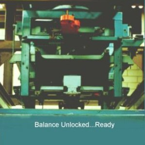
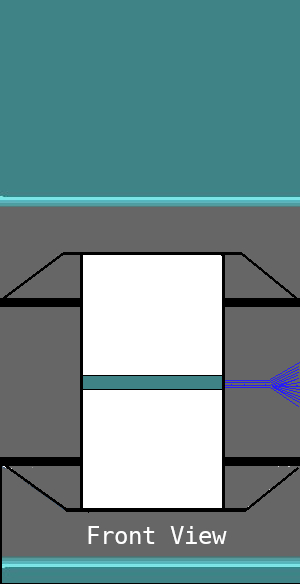

1m x 8m Wind TunnelUsing Pressure Scanning Setup Operating Procedure : 1.Select Model (Text Data File) : 2. Input ambient pressureLab Pressure (KPa) 3. Input tunnel air temperatureAir Temperature (Kelvin) 4.Set angle of attackAngle of Attack (Deg) 5. Select Wind velocity for runTunnel Wind Speed (m/s)   Click the 'Load' Button to mount the wing in the test section. Once you have correctly set all inputs then click the 'Start' button. Back to Top